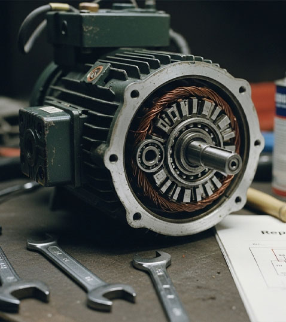

Borehole pumps, booster pumps and controls installed correctly.
Get a pump system matched to your borehole yield, pressure requirements, storage tanks and daily water demand. Wedrill Water installs submersible pumps, booster pumps, controllers and protection systems.
A focused page for people searching for pump installations.
This replaces generic project naming with a service page that supports Google Ads sitelinks, organic search, and direct customer conversion.
Submersible pumps
Installation and replacement of borehole pumps selected for borehole depth and yield.
Booster pumps
Pressure boosting for homes, estates, commercial sites and backup storage tanks.
Controls and cabling
Control boxes, float switches, pressure switches and protection equipment installed neatly.
Solar-ready setup
Design choices that make future solar pump integration easier and more reliable.
The wrong pump can waste power, damage equipment or run a borehole dry.
A borehole pump installation should be based on water availability and pressure demand, not only on pump horsepower. We match the full system so the installation performs daily.
- Borehole depth, static water level and pumping level reviewed before sizing.
- Pipework, valves, pressure control and tank levels configured for dependable supply.
- Protection added to reduce burnout risk during low-yield or dry-run conditions.
- Maintenance path planned for future pump repairs and performance checks.

Choose the installation path that matches your water source.
Borehole to property
Submersible pump, control box and pressure setup for direct borehole use.
Borehole to tank
Pump water into storage, then use a booster system for stable pressure.
Municipal backup
Backup tanks and booster pumps that keep water available during supply interruptions.
Need a pump installed or replaced?
Share your borehole depth, tank setup and pressure issue so we can recommend the right system.